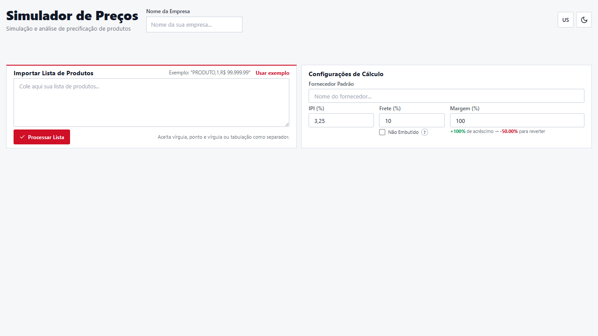
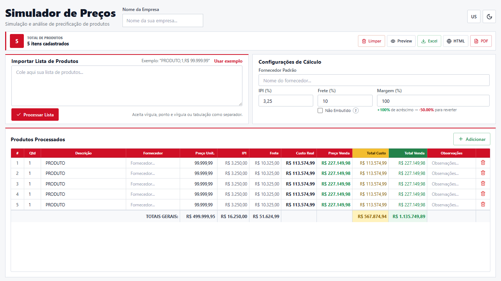
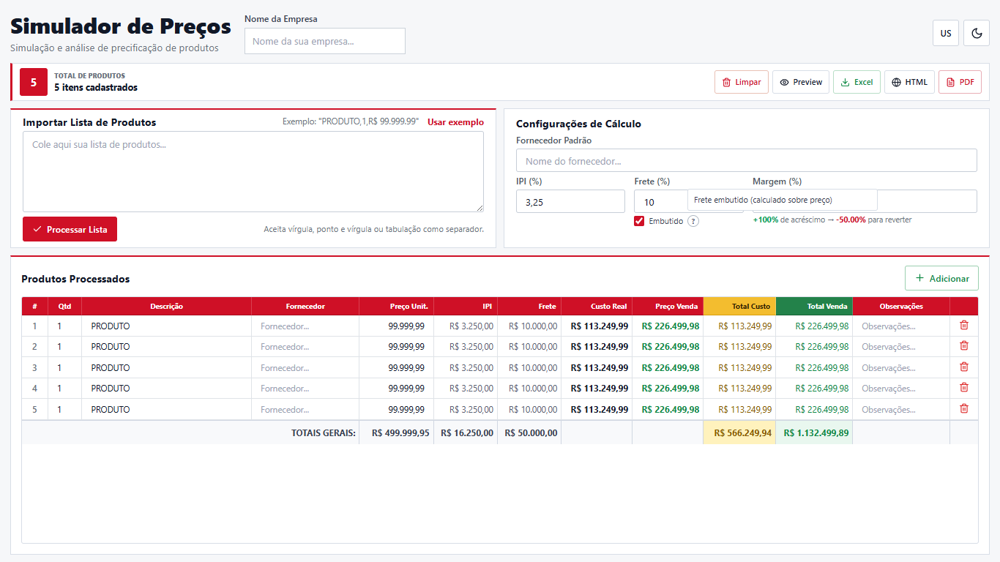
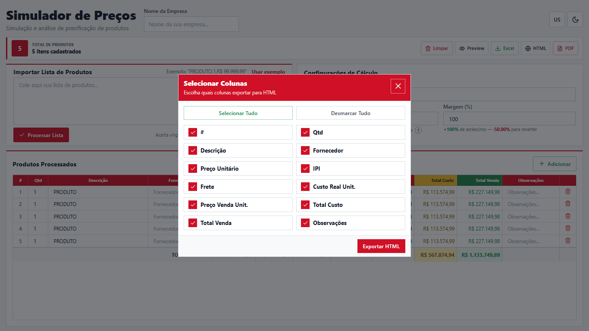
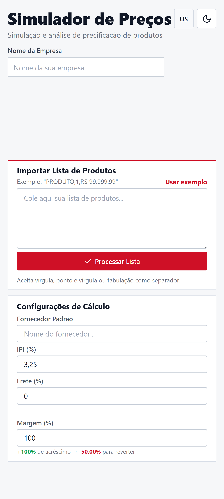
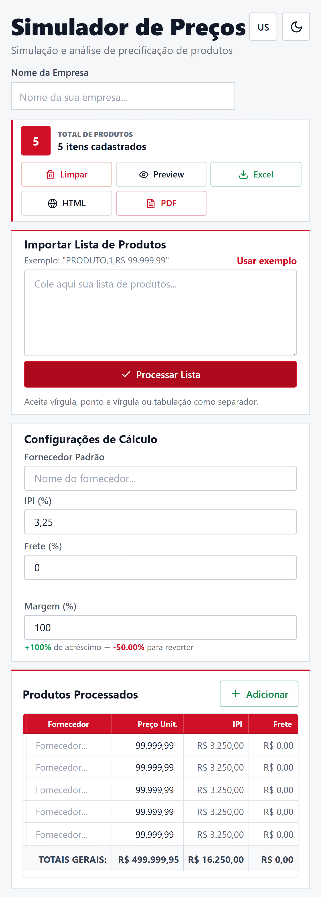
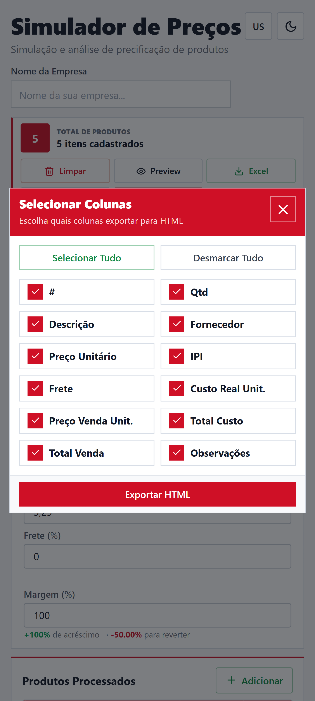
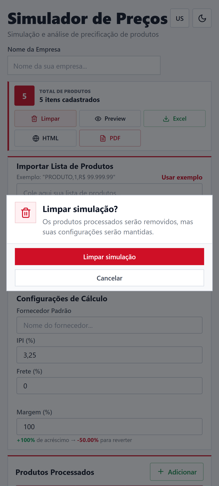

Simulador de Precos
Price Simulator
Documentacao tecnica v2 alinhada a interface operacional atual, aos contratos de calculo e aos exportadores reais do codigo.
Technical documentation v2 aligned with the current operational interface, calculation contracts, and real export code.
Introducao
Introduction
Proposito, publico e escopo atual do produto.
Purpose, audience, and current product scope.
O PriceSimulator e uma SPA em React criada para simular precos de venda a partir de listas de produtos, impostos, frete e margem. A versao 2 documentada aqui reflete a interface operacional atual: layout compacto, cards quadrados, tabela editavel por inputs diretos, modais consistentes e exportacao por selecao de colunas.
Proposito
Reduzir planilhas manuais e padronizar simulacoes comerciais, mantendo todo o processamento no navegador do usuario.
Publico-alvo
Compradores, analistas comerciais, equipes de vendas e gestores que precisam revisar custo real, preco de venda e totais antes de enviar uma cotacao.
PriceSimulator is a React SPA built to simulate selling prices from product lists, taxes, freight, and margin. Version 2 documented here reflects the current operational interface: compact layout, square cards, direct input editing in the table, consistent modals, and export by column selection.
Purpose
Reduce manual spreadsheets and standardize commercial simulations while keeping all processing inside the user's browser.
Audience
Buyers, commercial analysts, sales teams, and managers who need to review real cost, selling price, and totals before sending a quote.
Mudancas da branch de design
Design branch changes
Comparacao real entre main e design/interface-v2.
Real comparison between main and design/interface-v2.
git diff main...design/interface-v2, saindo de main@7c3b7a3 para design/interface-v2@e0e8224. A tabela abaixo separa alteracoes funcionais, refatoracoes e ajustes visuais.
Technical baseline for this review: git diff main...design/interface-v2, from main@7c3b7a3 to design/interface-v2@e0e8224. The table below separates functional changes, refactors, and visual updates.
| Area | Area | Na branch main | On main | Na branch design/interface-v2 | On design/interface-v2 |
|---|---|---|---|---|---|
| Shell / layout | App em pilha vertical, cards grandes com gradientes, blur e bordas arredondadas.Vertical stacked app, large gradient cards, blur, and rounded borders. | Shell operacional compacto, largura maxima controlada, grid desktop em duas colunas e tabela ocupando a area principal quando ha produtos.Compact operational shell, controlled max width, two-column desktop grid, and the table occupying the main area when products exist. | |||
| Primitivas visuaisVisual primitives | Classes Tailwind repetidas dentro dos componentes.Repeated Tailwind classes inside components. | Novos componentes e helpers: Button, Card, Field, ModalShell e themeClasses.js.New components and helpers: Button, Card, Field, ModalShell, and themeClasses.js. |
|||
| ColunasColumns | Ordem, labels e larguras ficavam duplicados em tabela, preview, modal e geradores.Order, labels, and widths were duplicated across table, preview, modal, and generators. | REPORT_COLUMNS centraliza o contrato; exportRows.js centraliza valores por coluna e totais.REPORT_COLUMNS centralizes the contract; exportRows.js centralizes per-column values and totals. |
|||
| Formatacao e parsingFormatting and parsing | Edicoes numericas usavam parseFloat direto; moeda era renderizada com toFixed em varios pontos.Numeric edits used direct parseFloat; money was rendered with toFixed in several places. |
Entraram parseNumberInput, parsePriceValue, formatMoney, formatNumberInput e formatReverseMargin.Added parseNumberInput, parsePriceValue, formatMoney, formatNumberInput, and formatReverseMargin. |
|||
| Frete | Contrato de calculo com dois modos: frete sobre preco unitario no modo embutido, ou sobre preco unitario + IPI no modo nao embutido.Calculation contract with two modes: freight on unit price in embedded mode, or on unit price + tax in non-embedded mode. | Sem alteracao funcional no calculo. O ConfigPanel recebeu controle compacto, tooltip e classes visuais novas.No functional calculation change. ConfigPanel received a compact control, tooltip, and new visual classes. |
|||
| Limpar simulacaoClear simulation | StatusBar chamava window.confirm antes de limpar.StatusBar called window.confirm before clearing. |
Novo ConfirmModal controlado pelo App, preservando configuracoes e removendo apenas produtos.New ConfirmModal controlled by App, preserving settings and removing only products. |
|||
| Exports | XLS, HTML e PDF montavam colunas, celulas e totais com logica propria e repetida.XLS, HTML, and PDF built columns, cells, and totals with their own repeated logic. | Geradores usam getSelectedReportColumns, getReportColumnValue, getReportTotalValue e visual atualizado.Generators use getSelectedReportColumns, getReportColumnValue, getReportTotalValue, plus refreshed visuals. |
|||
| Evidencias visuaisVisual evidence | Screenshots estavam no nivel raiz de assets/screenshots e representavam a interface anterior.Screenshots lived at the root of assets/screenshots and represented the previous interface. |
Screenshots antigos foram movidos para v01 e novas capturas v02/PT-BR e v02/EN-US foram adicionadas.Old screenshots moved to v01; new v02/PT-BR and v02/EN-US captures were added. |
Visao geral
Overview
Fluxo macro do sistema e principais entradas e saidas.
High-level system flow plus main inputs and outputs.
Importar
Import
Colar produtos em formatos aceitos pelo parser.
Paste products in parser-supported formats.
Configurar
Configure
Informar empresa, fornecedor padrao, IPI, frete e margem.
Set company, default supplier, tax, freight, and margin.
Calcular
Calculate
Hooks recalculam custo real, venda e totais.
Hooks recalculate real cost, sale price, and totals.
Revisar
Review
Editar linhas, adicionar produtos e observacoes.
Edit rows, add products, and add notes.
Exportar
Export
Selecionar colunas e gerar XLS, HTML ou PDF.
Select columns and generate XLS, HTML, or PDF.
Entradas
Inputs
- Texto de produtos importado no
ImportSection.Product text imported throughImportSection. - Campos globais: empresa, fornecedor padrao, IPI, frete, margem e modo do frete.Global fields: company, default supplier, tax, freight, margin, and freight mode.
- Edicoes diretas na tabela depois do processamento.Direct table edits after processing.
Saidas
Outputs
- Tabela calculada com 12 colunas e totais gerais.Calculated table with 12 columns and grand totals.
- Preview em modal para revisao visual.Modal preview for visual review.
- Arquivos
.xls,.htmle janela de impressao/PDF..xlsand.htmlfiles plus a print/PDF window.
Funcionalidades v2
v2 Features
Mapa funcional do app atual e dos arquivos responsaveis.
Functional map of the current app and responsible files.
| Funcionalidade | Feature | Comportamento documentado | Documented behavior | Arquivos principais | Main files |
|---|---|---|---|---|---|
| Importacao de produtosProduct import | Processa texto livre, aplica fornecedor padrao, aceita multiplos formatos e limpa o campo apos processar.Processes free text, applies the default supplier, accepts multiple formats, and clears the field after processing. | ImportSection.jsx, useParser.js, parsers.js, useProducts.js |
|||
| Configuracoes globaisGlobal settings | Controla empresa, fornecedor padrao, IPI, frete, margem e modo de frete em estado local da sessao.Controls company, default supplier, tax, freight, margin, and freight mode in local session state. | Header.jsx, ConfigPanel.jsx, defaults.js |
|||
| Tabela editavelEditable table | Exibe 12 colunas, inputs diretos, adicao/remocao de linhas e totais calculados.Shows 12 columns, direct inputs, row add/delete actions, and calculated totals. | ProductTable.jsx, TableRow.jsx, columns.js |
|||
| Preview | Abre modal com empresa, quantidade de produtos, colunas de relatorio e totais da simulacao.Opens a modal with company, product count, report columns, and simulation totals. | PreviewModal.jsx, ModalShell.jsx |
|||
| ExportacaoExport | Gera XLS, HTML e PDF usando selecao de colunas e valores compartilhados por contrato.Generates XLS, HTML, and PDF using column selection and shared contract values. | ExportModal.jsx, useExport.js, xlsGenerator.js, htmlGenerator.js, pdfGenerator.js |
|||
| Interface | Mantem tema claro/escuro, PT-BR/EN-US e layout responsivo operacional.Keeps light/dark theme, PT-BR/EN-US, and responsive operational layout. | App.jsx, Header.jsx, themeClasses.js, translations.js |
|||
| Limpeza da simulacaoSimulation clearing | Solicita confirmacao em modal, remove produtos e preserva configuracoes globais.Requests confirmation in a modal, removes products, and preserves global settings. | StatusBar.jsx, ConfirmModal.jsx, useProducts.js |
design/interface-v2, nao um roadmap.
This matrix covers the behavior implemented on design/interface-v2, not a roadmap.
Quick start
Como instalar, executar e gerar build local.
How to install, run, and build locally.
1. Requisitos
Use Node ^20.19.0 ou >=22.12.0, conforme o engine do Vite 7.3.1 no lockfile.
Use Node ^20.19.0 or >=22.12.0, matching Vite 7.3.1's lockfile engine.
node -v
npm -v2. Instalar
Execute na raiz do repositorio.
Run from the repository root.
npm install3. Rodar
O Vite esta configurado para abrir na porta 3000.
Vite is configured to open on port 3000.
npm run dev
http://localhost:3000/package.json: dev, build e preview. Nao ha scripts de lint ou teste declarados no package atual.
Scripts currently available in package.json: dev, build, and preview. There are no lint or test scripts declared in the current package.
Como usar
How to use
Fluxos operacionais atuais da interface v2.
Current operational flows in the v2 interface.
Formatos aceitos pelo parser atual
Formats accepted by the current parser
Produto A, 2, R$ 149,90
Produto B, 1, 249.06
5x Cabo USB R$ 29,90
Monitor R$ 1.299,00
Produto C | 3 | 10,50
Produto D - 4 - $ 19.99
Teclado; 2; 89,90O parser tambem ignora cabecalho CSV quando a primeira linha contem produto e qtde, quantidade ou descricao.
The parser also skips a CSV header when the first line contains product and qty, quantity, or description.
Edicao apos processar
Editing after processing
- Adicionar linha manual usa o fornecedor padrao atual.Adding a manual row uses the current default supplier.
- Quantidade e preco passam por
parseNumberInput.Quantity and price go throughparseNumberInput. - Descricao, fornecedor e observacoes sao tratados como texto.Description, supplier, and notes are treated as text.
- O botao de lixeira remove apenas a linha correspondente.The trash button removes only the matching row.
- Limpar simulacao exige confirmacao e preserva as configuracoes globais.Clear simulation requires confirmation and preserves global settings.
Empresa
Campo do header usado na previa e nos relatorios; quando vazio, a previa mostra "Nao informada".
Header field used in preview and reports; when empty, preview shows "Not informed".
Fornecedor padrao
Default supplier
Aplicado aos produtos importados e a novas linhas manuais; cada linha ainda pode ser sobrescrita.
Applied to imported products and new manual rows; each row can still be overwritten.
Tema e idioma
Theme and language
Alternancia em estado React local: tema claro/escuro e PT-BR/EN-US sem persistencia apos reload.
Local React state toggles: light/dark theme and PT-BR/EN-US without persistence after reload.
Fluxos operacionais
Operational flows
Casos de uso principais que substituem os diagramas extensos da v1.
Main use cases replacing the long v1 diagrams.
UC01
Simular precos
Simulate prices
Usuario importa produtos, ajusta configuracoes e processa a lista; a tabela exibe custos, venda e totais.
The user imports products, adjusts settings, and processes the list; the table shows costs, sales, and totals.
UC02
Ajustar itens
Adjust items
Usuario edita quantidade, descricao, fornecedor, preco ou observacoes; os calculos reagem ao estado atual.
The user edits quantity, description, supplier, price, or notes; calculations react to the current state.
UC03
Revisar resultado
Review result
Usuario abre o preview e confere empresa, produtos, colunas de relatorio e totais antes de exportar.
The user opens preview and checks company, products, report columns, and totals before exporting.
UC04
Exportar relatorio
Export report
Usuario escolhe XLS, HTML ou PDF, seleciona colunas quando aplicavel e gera a saida com os dados em memoria.
The user chooses XLS, HTML, or PDF, selects columns when applicable, and generates output from in-memory data.
UC05
Limpar simulacao
Clear simulation
Usuario aciona limpar, confirma no modal e remove produtos sem redefinir empresa, fornecedor ou percentuais.
The user triggers clear, confirms in the modal, and removes products without resetting company, supplier, or percentages.
UC06
Alternar contexto
Switch context
Usuario alterna PT-BR/EN-US e tema claro/escuro; labels e estilo mudam apenas na sessao atual.
The user switches PT-BR/EN-US and light/dark theme; labels and styling change only for the current session.
Exports
Como XLS, HTML, PDF e preview usam os dados calculados.
How XLS, HTML, PDF, and preview consume calculated data.
| Formato | Comportamento atual | Current behavior | Arquivo/fonte | File/source |
|---|---|---|---|---|
| Preview | Abre modal com todas as colunas de REPORT_COLUMNS, empresa, total de produtos e totais gerais.Opens a modal with every REPORT_COLUMNS column, company, product count, and grand totals. |
src/components/PreviewModal.jsx |
||
| XLS | Baixa simulacao_precos_YYYY-MM-DD.xls usando tabela HTML compativel com Excel e BOM UTF-8.Downloads simulacao_precos_YYYY-MM-DD.xls using an Excel-compatible HTML table and UTF-8 BOM. |
src/utils/xlsGenerator.js |
||
| HTML | Baixa um documento standalone com cabecalho, configuracoes, empresa, tabela e rodape.Downloads a standalone document with header, settings, company, table, and footer. | src/utils/htmlGenerator.js |
||
Abre uma nova janela e usa window.print(); requer permissao de pop-ups se o navegador bloquear a janela.Opens a new window and uses window.print(); requires popup permission if the browser blocks the window. |
src/utils/pdfGenerator.js |
Selecao de colunas
Column selection
O modal de exportacao inicia com todas as colunas selecionadas, permite selecionar tudo/desmarcar tudo e bloqueia exportacao quando nenhuma coluna esta ativa.
The export modal starts with all columns selected, supports select all/deselect all, and blocks export when no column is active.
Colunas disponiveis
Available columns
# Qtd Descricao Fornecedor Preco Unit. IPI Frete Custo Real Preco Venda Total Custo Total Venda Observacoes
Calculos
Calculations
Contratos matematicos implementados em src/utils/calculations.js.
Math contracts implemented in src/utils/calculations.js.
Produto individual
Single product
precoUnitario = product.preco
ipiValue = precoUnitario * (ipi / 100)
baseParaFrete = freteEmbutido
? precoUnitario
: precoUnitario + ipiValue
freteValue = baseParaFrete * (frete / 100)
custoRealUnitario = precoUnitario + ipiValue + freteValue
precoVendaUnitario = custoRealUnitario * (1 + margem / 100)
totalCustoReal = custoRealUnitario * quantidade
totalPrecoVista = precoVendaUnitario * quantidadeTotais e margem reversa
Totals and reverse margin
totalPrecoOriginal: soma de preco base multiplicado por quantidade.sum of base price multiplied by quantity.totalIPI: soma do IPI unitario multiplicado por quantidade.sum of unit tax multiplied by quantity.totalFrete: soma do frete unitario multiplicado por quantidade.sum of unit freight multiplied by quantity.totalCustoReal: soma dos custos reais totais.sum of total real costs.totalPrecoVista: soma dos precos de venda totais.sum of total selling prices.
margemReversa = margem / (100 + margem) * 100Requisitos
Requirements
Requisitos funcionais e nao funcionais atualizados para a v2.
Functional and non-functional requirements updated for v2.
Funcionais
Functional
- Importar multiplas linhas de produtos via texto livre.
- Adicionar linha manual vazia com fornecedor padrao.
- Editar quantidade, descricao, fornecedor, preco e observacoes na tabela.
- Calcular IPI, frete, custo real, preco de venda e totais em tempo real.
- Alternar frete embutido quando ha percentual de frete informado.
- Exibir preview da simulacao em modal.
- Exportar XLS, HTML e PDF com selecao de colunas.
- Alternar idioma PT-BR/EN-US e tema claro/escuro.
- Limpar produtos com confirmacao sem zerar configuracoes globais.
- Import multiple product rows from free text.
- Add an empty manual row with the default supplier.
- Edit quantity, description, supplier, price, and notes in the table.
- Calculate tax, freight, real cost, selling price, and totals in real time.
- Toggle embedded freight when a freight percentage is set.
- Show the simulation preview in a modal.
- Export XLS, HTML, and PDF with column selection.
- Switch PT-BR/EN-US language and light/dark theme.
- Clear products with confirmation without resetting global settings.
Nao funcionais
Non-functional
- Execucao 100% client-side, sem API propria.
- Layout responsivo para desktop e mobile.
- Sem dependencia pesada para gerar arquivos: exports usam APIs nativas do browser e HTML.
- Dados sensiveis ficam no estado local da pagina e nao sao enviados a terceiros pelo app.
- Modais respondem a Escape, backdrop e foco inicial no botao de fechar quando aplicavel.
- Build estatico gerado por Vite para deploy em hospedagem web comum.
- 100% client-side execution, with no project API.
- Responsive layout for desktop and mobile.
- No heavy file-generation dependency: exports use native browser APIs and HTML.
- Sensitive data stays in page-local state and is not sent to third parties by the app.
- Modals respond to Escape, backdrop click, and initial close-button focus when applicable.
- Static build generated by Vite for common web hosting deployment.
Arquitetura
Architecture
Organizacao real do codigo e responsabilidades por camada.
Actual code organization and responsibilities by layer.
UI Components
Header.jsx: titulo, empresa, idioma e tema.title, company, language, and theme.StatusBar.jsx: contador, limpar, preview e exports.counter, clear, preview, and exports.ImportSection.jsx: textarea, exemplo e processamento.textarea, example, and processing.ConfigPanel.jsx: IPI, frete, margem e fornecedor padrao.tax, freight, margin, and default supplier.ProductTable.jsx/TableRow.jsx: tabela editavel.editable table.PreviewModal.jsx,ExportModal.jsx,ConfirmModal.jsx: modais.modals.
Hooks
useProducts.js: array de produtos, inclusao, edicao, remocao e limpeza.product array, add, edit, delete, and clear actions.useCalculations.js: memoizacao de calculos por produto e totais.memoized per-product calculations and totals.useParser.js: fachada para parsing de texto.facade for text parsing.useExport.js: orquestracao de XLS, HTML e PDF.orchestration for XLS, HTML, and PDF.
Utils / Constants
calculations.js: formulas de preco.pricing formulas.parsers.js: regex de importacao.import regex patterns.formatters.js: numero, moeda e margem reversa.number, money, and reverse-margin formatting.columns.js: contrato de colunas compartilhado.shared column contract.exportRows.js: valores por coluna e totais.per-column values and totals.htmlGenerator.js,xlsGenerator.js,pdfGenerator.js: relatorios.reports.
App.jsx e o ponto de composicao: mantem estados globais da sessao, monta o objeto config, chama hooks e injeta callbacks nos componentes.
App.jsx is the composition point: it keeps global session state, builds the config object, calls hooks, and passes callbacks to components.
Desenvolvimento
Development
Pontos de extensao mais provaveis.
Most likely extension points.
Novo formato de importacao
New import format
Editar src/utils/parsers.js, adicionando um bloco regex antes do push final. Preserve os campos quantidade, descricao, fornecedor, preco e observacoes.
Edit src/utils/parsers.js, adding a regex block before the final push. Preserve quantidade, descricao, fornecedor, preco, and observacoes.
Nova coluna
New column
Comece por src/constants/columns.js. Depois atualize exportRows.js e, se necessario, o calculo ou a linha da tabela.
Start in src/constants/columns.js. Then update exportRows.js and, if needed, the calculation or table row.
Novo idioma
New language
A fonte atual e src/constants/translations.js. O toggle em Header.jsx hoje alterna apenas entre pt e en.
The current source is src/constants/translations.js. The toggle in Header.jsx currently switches only between pt and en.
Stack atual
Current stack
| PacotePackage | VersaoVersion | UsoUse |
|---|---|---|
| react | 18.2.0 | Componentes e hooksComponents and hooks |
| react-dom | 18.2.0 | Renderizacao da SPASPA rendering |
| vite | 7.3.1 | Dev server e buildDev server and build |
| tailwindcss | 3.3.3 | Classes utilitariasUtility classes |
| lucide-react | 0.263.1 | Icones da interfaceInterface icons |
Checklist antes de publicar
Checklist before publishing
- Rodar
npm run build. - Validar tema claro e escuro.
- Validar PT-BR e EN-US.
- Importar, editar, adicionar e remover produtos.
- Testar preview, modal de colunas, XLS, HTML e PDF.
- Verificar mobile e desktop sem overflow incoerente.
- Run
npm run build. - Validate light and dark themes.
- Validate PT-BR and EN-US.
- Import, edit, add, and remove products.
- Test preview, column modal, XLS, HTML, and PDF.
- Check mobile and desktop without incoherent overflow.
Screenshots
Capturas v02 usadas como evidencia visual desta documentacao.
v02 captures used as visual evidence for this documentation.







